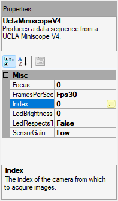
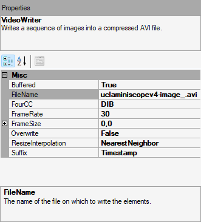
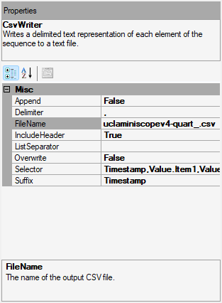

Workflow Tutorial#
Download the following workflow (.bonsai file) and open it with Bonsai:

 uclaminiscopev4-miniscopedaq-savedata.bonsai
uclaminiscopev4-miniscopedaq-savedata.bonsai
Set the
UCLAMiniscopeV4operator’sIndexproperty to the value that corresponds to the index of your miniscope.Set the
Indexvalue by clicking on the ... dropdown available at theIndexfield that appears in the Properties pane after left-clicking theUCLAMiniscopeV4node.Click Scan and choose from one of the indices that appear. This might take time if many physical or virtual camera devices are connected to your computer.
Click Ok.
Note
If there are multiple miniscopes connected to your PC (including laptop webcams), finding the correct index value might involve an iterative trial-and-error process. Try starting the workflow now [1] to confirm the selected index is correct.
Save data according to your specifications:
Image video data:
Left-click the
VideoWriternode and edit fields under the properties pane. Confirm frame rate matches that of the UCLA Miniscope v4.For
FourCC, “DIB “ and “FMP4” are recommended for neural recordings.“DIB “ is compatible with 8-bit and 10-bit data.
“FMP4” performs data compression for smaller file sizes and is compatible only with 8-bit data.
Orientation quarternion data:
Left-click the
CsvWriternode and edit fields under the properties pane
Note
It is best practice to set the
Suffixproperty to Timestamp or FileCount or set the Overwrite property to False to avoid accidentally overwriting important data.Left-click a property field’s corresponding label to display the property’s detail at the bottom of the properties pane (e.g. how it is for the
FileNameproperty in the two above screenshots)To temporarily disable saving image or orientation data, disable the respective Writer operator left-clicking the Disable option in the menu that appears after right-clicking an enabled node (or left-clicking the node and using the
Ctrl+Dhotkey). Re-enable the Writer node by left-clicking the Enable option in the menu that appears after right-clicking a disabled node (or left-clicking the node and using theCtrl+Shift+Dhotkey).
Start the workflow. [1]
Stop the workflow. [2]
Navigate to the directory where data was saved which was specified in step 3. Confirm the data exists and comports with expectations. The image can be easily viewed in any media playback software that supports the
FourCCvalue specified in step 3. The orientation data can be easily viewed in any spreadsheet software that can supports .csv files.